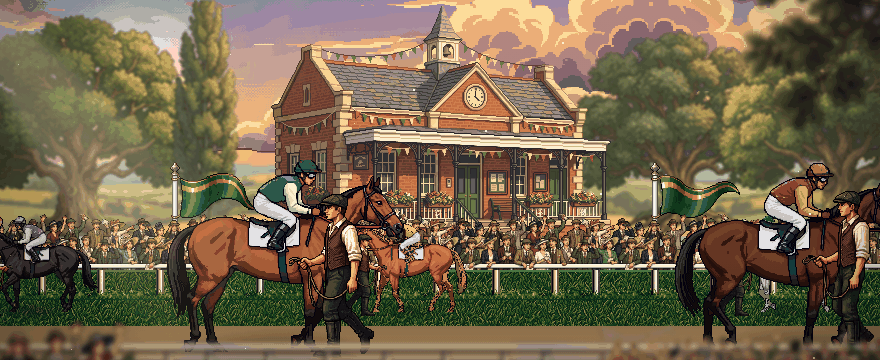
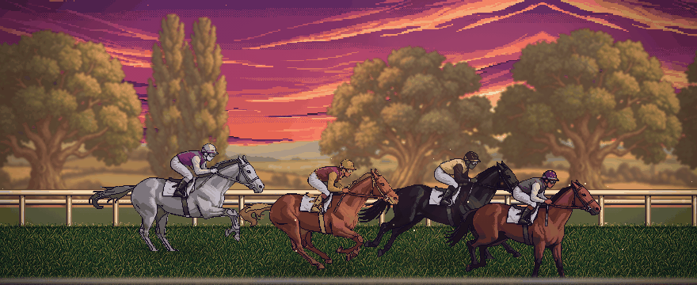

The paddock
● LIVE IN
1:52
Ashcombe Novice Stakes
1,500 m · Synthetic · Good · 9 runners
4
Silver Feather
yours · stalker · 2-1-4 · fits trip ✓ ground ✓
58
1
Harbour Tide
Larkspur Farm · front-runner · 1-1-3
61
2
Copper Comet
Brightwater Stud · closer · 3-5-2
55
3
Velvet Thunder
Club · stalker · 6-2-7
52
+ 5 more runners
Watch from the stands
Plan: stalker, normal ride · change until 0:30
● Live · 0:41
Follow mine

1 Harbour Tide
2 Silver Feather · ½ L
3 Copper Comet · 1 L
412 m
TO GO
Commentary
“Silver Feather is switched wide — and she’s coming!”
Start
Furlong pole
Post
Result · photo finish
Share
Ashcombe Novice Stakes · 1,500 m
Silver Feather wins by a short head
1:31.84
9 ran
+2,500 cr
Came from 6th at the furlong pole · fastest final 200 m · rating 58 → 64
▶ Replay
Back to the yard